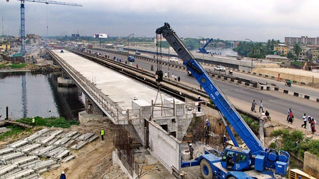

Improve Existing Infrastructural Programs
Some farmers fail to get their produce to the market because of poor infrastructure including roads, storage facilities, and food processing equipment. It ends up rotting in the farms than being taken to those who need it or for processing. If the infrastructure is improved, more food will be available in the market and the food insecurity levels can go down.
Three ways to improve the quality of infrastructure investments
- Create markets for infrastructure projects and services, The rationale is to change the way how infrastructure is managed: “Governments typically approach infrastructure procurement on a project-by-project basis and as a result their interactions with the market are often uncoordinated and fragmented. When demand from government is lumpy and ‘stop-go’ in nature this can exacerbate the cost of infrastructure and lower the quality of market responses.” This affects the development of the infrastructure market and the ability of bidders to provide best possible services and innovation:
- long term pipeline of projects,
- strong private sector participation and ownership,
- a shift from assets to outcomes and service delivery,
- innovation, responsiveness, and ability to scale-up,
- full cost recovery,
- regulations to protect the long term interests of consumers in the absence of market competition.
- Enhance the attractiveness of infrastructure projects for private funding
Mobilizing private funding for infrastructure projects is crucial to bridge the infrastructure gap in Latin America and the Caribbean, and indeed elsewhere in the World. For this we need improved transparency in the infrastructure project generation process, higher certainty concerning the framework conditions for project execution and reduced risk for the operation phase. A long term infrastructure pipeline and better, broader and more independent cost benefit analysis are the major levers to reach this. It is therefore recommended by Bowditch that: - To implement a consistent and unified methodology for cost benefit appraisals to have better comparability, and ensure full transparency for all public projects listed for consideration including those rejected,
- A culture of continuous improvement for project evaluations by reviewing them upon completion and 10 years after,
- To align infrastructure funding and capital market development through long-term bond market development, superannuation and pension fund preferences, and
- To enhance investment attractiveness through higher asset utilization: For this, price signals should guide supply and demand for infrastructure; full cost recovery should improve the attractiveness of private investment; and new technologies can enhance asset utilization.
- Overhaul infrastructure for radical innovation and productivity growth
Improving productivity and harnessing the power of innovation in the infrastructure sector are important preconditions for increased infrastructure productivity. The recommended methods to promote this are: - Placing outcomes as the central premise in infrastructure procurement is an innovation in itself, but also a catalyst for innovation in the provision infrastructure services as it shifts the focus from the physical attributes of an asset to the service to be delivered.
- High quality decisions which reflect the whole of government considerations ensure consistency and a streamlined approval process which is the most important precondition for efficient implementation.
- Long–term strategic land acquisition based on prior identification of strategic land corridors in cities and regions speeds up project implementation as it avoids delays from property disputes.
- Well qualified, multidisciplinary and teams in the relevant government agencies, equipped with the necessary decision making power and actively involving the project contractor are crucial for speed and quality of the delivery process.
- Better information and analytics for infrastructure construction and operation and the use of big data for infrastructure service planning can dramatically boost the performance of existing infrastructure assets as well as the efficiency and optimization of new infrastructure service offerings.
